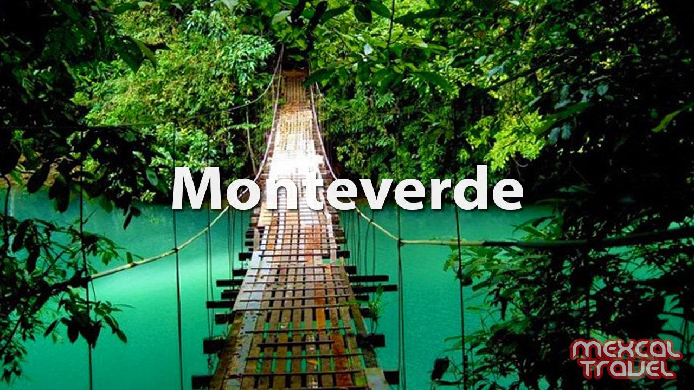
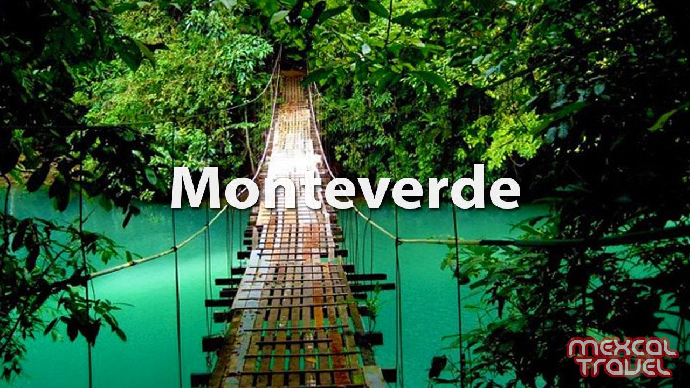

Costa Rica is a fascinating country located in Central America. The country shares its borders with Panama and Nicaragua. It also has coastlines on the Pacific Ocean and the Caribbean Sea. San José, the largest city, serves as the capital of the country. Costa Rica is endowed with great natural wealth that makes it one of the world’s 17 megadiverse nations. Of all the Central American countries, Costa Rica is generally regarded as having the most stable and most democratic government. Its constitution of 1949 provides for a unicameral legislature, a fair judicial system, and an independent electoral
 List of things you can to in Costa Rica
List of things you can to in Costa Rica
Extending from northwest to southeast, Costa Rica is bounded by Nicaragua to the north, by the Caribbean Sea along the 185-mile (300-km) northeastern coastline, by Panama to the southeast, and by the Pacific Ocean along the 630-mile (1,015-km) southwestern coastline. At the country’s narrowest point, the distance between the Pacific and the Caribbean is only about 75 miles (120 km).
 Climate
Climate
Thermal convection and onshore breezes bring abundant rains to the Pacific coast in the wet season, generally May to October in the north and April to December in the south. Northeasterly trade winds on the Caribbean provide ample year-round precipitation for the country’s east coast, with the heaviest amounts occurring in the Barra del Colorado region. The higher mountain ranges have warm temperate climates, and the Pacific slopes have alternating wet and dry seasons.
Plant and animal lifeDense broad-leaved evergreen forest, which includes mahogany and tropical cedar trees, covers about one-third of Costa Rica’s landscape. On the Talamanca range grow numerous evergreen oaks and, above the timberline, mountain scrub and grasses. The northwest, with the longest dry season, contains open deciduous forest. Palm trees are common on the Caribbean coastline, and mangroves grow on the shallow protected shores of the Nicoya and Dulce gulfs along the Pacific. Mosses, orchids, and other tropical plants are abundant. Many of the world’s tropical biologists have carried out studies at the various research stations of the Organization for Tropical Studies, which has its headquarters in San Pedro, a suburb of San José, as well as at the Tropical Agricultural Research and Higher Education Centre in Turrialba. Costa Rica is an excellent place to spot sloths in their natural ambiance, as the country has the 5% of the world’s biodiversity and there are a lot of places where you can be so close of the natural sloth habitat, and this results very attractive for both, locals and foreigners.
 Price per Activity
Price per Activity
| Activity | Price per person |
|---|---|
| Kayak | $15 |
| Hiking | $20 |
| Horseback riding | $80 |
 Link

Link
CLICK TO GET HACKED!!
Link

Link
CLICK TO GET HACKED!!